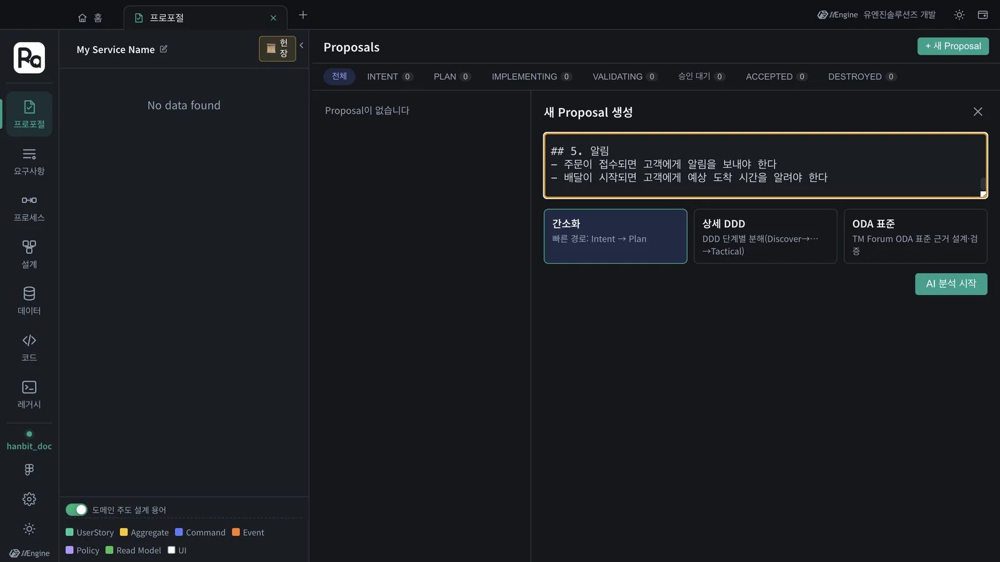
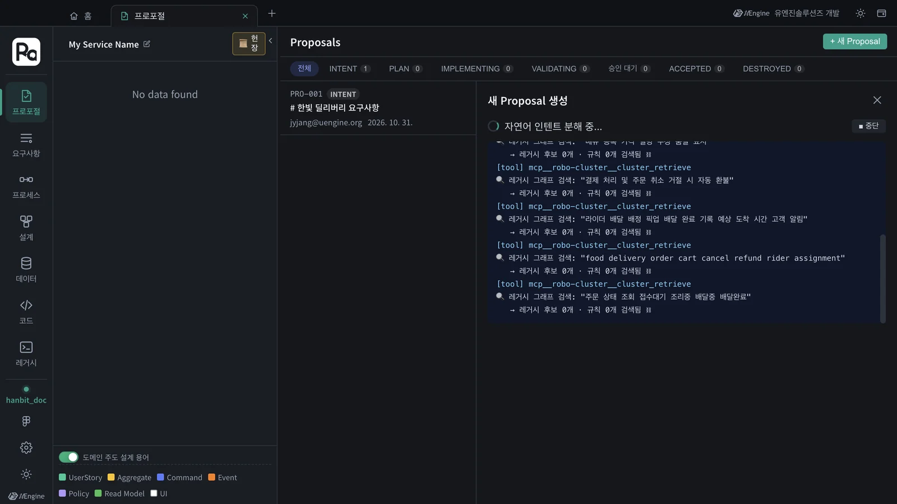
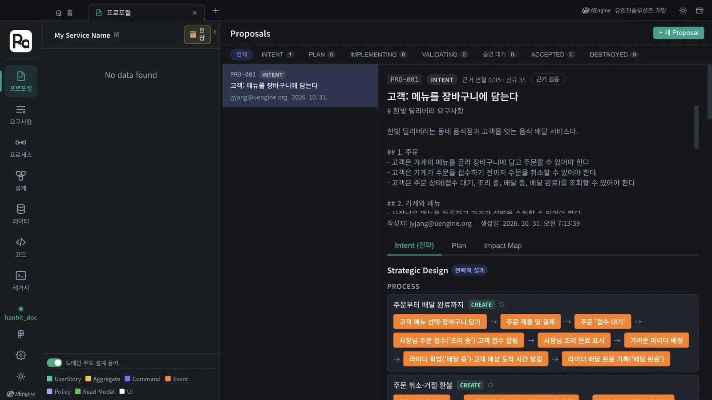
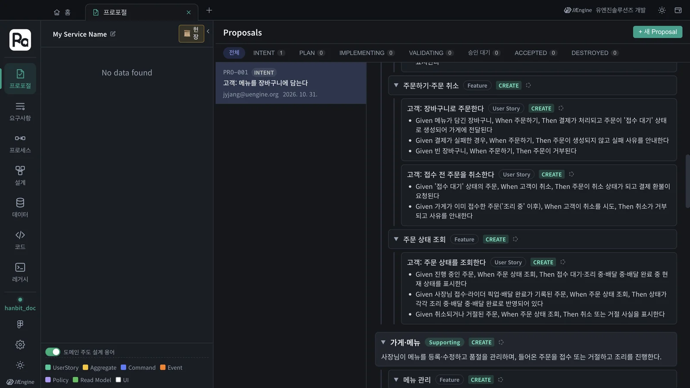
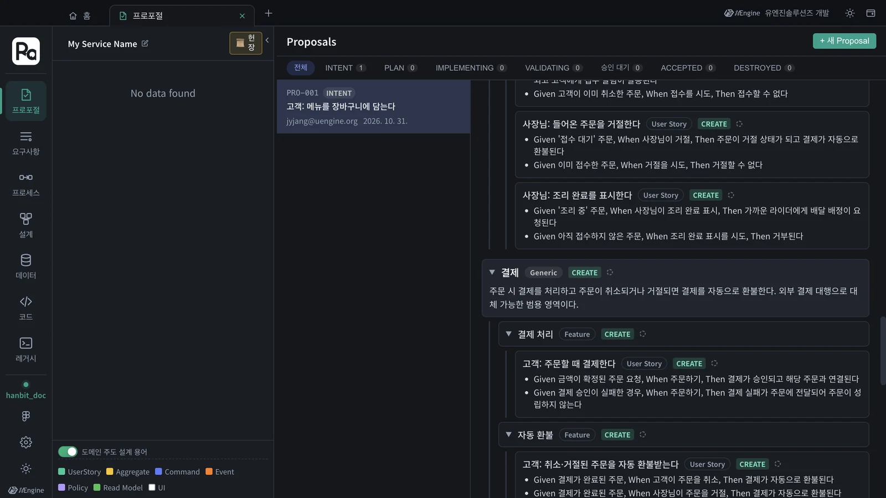

요구사항 문서 한 편을 통째로 새 프로포절에 붙여 넣으면, Claude Code의 INTENT 스킬이 문서 전체를 바운디드 컨텍스트 · 기능 · 사용자 스토리 · 인수 조건 · 프로세스로 나눕니다. OpenAI 키 없이 됩니다.
한 줄이 아니라 문서 한 편#
3장은 요구사항 한 줄로 시작했습니다. 실제 일은 대개 기획서나 요구사항 정의서 같은 문서에서 시작합니다. 문서에서 설계를 시작하는 길은 두 가지입니다.
| 길 | 어디서 | 누가 나누나 | 키 |
|---|---|---|---|
| 프로포절에 붙여 넣기 (이 장) | 프로포절 탭 › + 새 Proposal | Claude Code의 robo-proposal-intent 스킬 |
필요 없음 |
| 문서 업로드 | 요구사항 탭 › 문서 업로드 | 앱 백엔드의 AI 파이프라인 | OpenAI API 키 |
이 장은 키 없이 되는 첫 번째 길을 씁니다. 결과는 3장과 같은 모양 — 프로포절 하나의 전략 설계 — 이라서, 그대로 4~7장처럼 헌장 · Plan · 구현으로 이어 갈 수 있습니다.
실습 문서#
hanbit-delivery-requirements.md를 내려받습니다. 한빛 딜리버리의 요구사항을 다섯 구획으로 적은 짧은 문서입니다.
# 한빛 딜리버리 요구사항
한빛 딜리버리는 동네 음식점과 고객을 잇는 음식 배달 서비스다.
## 1. 주문
- 고객은 가게의 메뉴를 골라 장바구니에 담고 주문할 수 있어야 한다
- 고객은 가게가 주문을 접수하기 전까지 주문을 취소할 수 있어야 한다
- 고객은 주문 상태(접수 대기, 조리 중, 배달 중, 배달 완료)를 조회할 수 있어야 한다
## 2. 가게와 메뉴
…
## 3. 결제
…
## 4. 배달
…
## 5. 알림
- 주문이 접수되면 고객에게 알림을 보내야 한다
- 배달이 시작되면 고객에게 예상 도착 시간을 알려야 한다
따라 하기 1 — 연습 프로젝트 만들기#
3~7장의 hanbit_delivery 설계와 섞이지 않도록 프로젝트를 하나 따로 만듭니다(10장과 같은 방법).
- 홈의 프로젝트 줄에서 프로젝트 바꾸기를 누릅니다.
- 새 프로젝트 칸에
hanbit_doc을 쓰고 만들기, 코드 폴더는 빈 폴더(예:hanbit-doc)를 골라 프로젝트 열기를 누릅니다.
따라 하기 2 — 문서를 붙여 넣고 분석#
- 홈에서 프로포절 카드를 열고 + 새 Proposal을 누릅니다.
- 입력칸에 문서 전체를 붙여 넣습니다(제목 줄과
##구획까지 그대로). 방식은 간소화를 그대로 둡니다. - AI 분석 시작을 누릅니다.

분석하는 동안 진행 창에 Claude Code가 하는 일이 보입니다. 요구사항마다 레거시 그래프를 찾아보고(레거시 그래프 검색: …), 이 프로젝트에는 분석한 레거시가 없으니 「레거시 후보 0개」로 넘어갑니다. 이 튜토리얼에서는 171초(약 3분) 걸렸습니다. 한 줄이었던 3장보다 조금 깁니다.

프로포절 제목
분석하는 동안 목록의 제목은 문서 첫 줄(「# 한빛 딜리버리 요구사항」)이고, 분석이 끝나면 첫 사용자 스토리(「고객: 메뉴를 장바구니에 담는다」)로 바뀝니다. 위쪽 본문에는 붙여 넣은 문서가 그대로 남습니다.
따라 하기 3 — 결과 읽기#
Proposal 보기를 누르면 3장과 같은 전략 설계 화면이 열립니다. 이번에는 문서 전체가 들어갔으니 규모가 큽니다.

| 바운디드 컨텍스트 | 분류 | 기능 |
|---|---|---|
| 주문 | Core | 장바구니 · 주문하기·주문 취소 · 주문 상태 조회 |
| 가게·메뉴 | Supporting | 메뉴 관리 · 주문 접수·조리 |
| 결제 | Generic | 결제 처리 · 자동 환불 |
| 배달 | Core | 라이더 배정 · 픽업·배달 완료 |
| 알림 | Generic | 고객 주문 알림 |
- 사용자 스토리 17개 — 고객 · 사장님 · 라이더가 주어입니다(「라이더: 음식 픽업을 기록한다」 등). 스토리마다 Given · When · Then 인수 조건이 붙습니다.
- 프로세스 3개 — 「주문부터 배달 완료까지」, 「주문 취소·거절 환불」, 「메뉴 관리」.
- Impact Map 칸의 Requirements 는 32개 — 바운디드 컨텍스트 5 + 기능 10 + 스토리 17 입니다.

문서의 다섯 구획이 그대로 바운디드 컨텍스트 다섯 개가 됐습니다. 구획을 넘나드는 흐름은 프로세스가 잇습니다 — 「사장님이 주문을 접수하면 조리가 시작된다」는 「가게와 메뉴」 구획의 문장이고 기능 「주문 접수·조리」도 가게·메뉴에 들어갔지만, 프로세스 「주문부터 배달 완료까지」 안에서는 주문 · 결제 · 배달 단계 사이에 놓입니다. 분류도 붙었습니다. 이 서비스의 핵심(Core)은 주문과 배달이고, 결제와 알림은 외부 서비스로 대신할 수 있는 일반(Generic) 영역입니다.

돌릴 때마다 조금씩 다릅니다
같은 문서로 세 번 돌려 보았습니다. 바운디드 컨텍스트 다섯 개와 사용자 스토리 17개는 세 번 모두 같았고, 기능은 12 · 10 · 10개, 프로세스는 3 · 2 · 3개로 조금씩 달랐습니다. 묶음을 나누는 정도가 다를 뿐 다룬 요구사항은 같습니다. 마음에 들지 않는 부분은 맨 아래 의도가 다른가요? 피드백 후 재생성으로 고칩니다(3장).
다음은#
이 프로포절도 3장의 PRO-001과 똑같이 이어 갑니다 — Plan 단계로 진행 →에서 헌장을 정하고(4장) Plan을 세우고(5장), 샌드박스에서 구현합니다(6장). 문서가 클수록 Plan과 구현도 오래 걸리니, 처음에는 이 장처럼 작은 문서로 연습하세요.
OpenAI 키가 있다면
요구사항 탭의 문서 업로드로 같은 문서를 올려 볼 수도 있습니다. 그 길은 앱 백엔드의 AI 파이프라인이 문서를 읽어 설계를 만들며, OpenAI API 키가 필요합니다(1장 「준비」).
확인할 것#
hanbit_doc프로젝트의 프로포절에 바운디드 컨텍스트 다섯 개(주문 · 가게·메뉴 · 결제 · 배달 · 알림)가 있다.- Impact Map 의 Requirements 수가 바운디드 컨텍스트 + 기능 + 스토리 수와 같다.
확인 문제#
- 문서를 프로포절에 붙여 넣는 길과 요구사항 탭의 「문서 업로드」는 무엇이 다른가요?
- 문서의 구획을 넘나드는 흐름(주문 → 접수 → 조리 → 배달)은 결과의 어디에 나타나나요?
- 같은 문서로 다시 돌렸더니 기능 수가 달라졌습니다. 잘못된 건가요?
정답
- 붙여 넣는 길은 Claude Code의 INTENT 스킬이 나누고 키가 필요 없습니다. 문서 업로드는 앱 백엔드의 AI 파이프라인이 처리하며 OpenAI API 키가 필요합니다.
- 프로세스입니다. 「주문부터 배달 완료까지」가 주문 · 가게·메뉴 · 결제 · 배달 컨텍스트의 단계를 차례로 잇습니다.
- 아닙니다. 묶음을 나누는 정도가 다를 뿐입니다. 이 튜토리얼에서도 기능은 12 · 10 · 10개였고 바운디드 컨텍스트와 스토리는 같았습니다. 원하는 모양이 있으면 피드백 후 재생성으로 고칩니다.